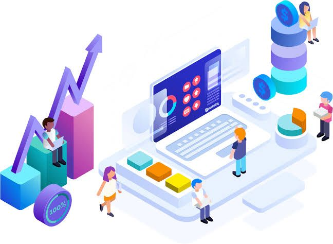

Para ter um bom direcionamento em relação sobre onde investir o seu marketing é necessário saber a qual meio
de comunicação a sua empresa faz parte.
Uma empresa que presta serviços deve ter o seu marketing voltado para os meios de comunicação digital, já
que eles são a maneira mais fácil, rápido e eficaz de se levar o conceito dos seus serviços ao cliente.
Mas como devo direcionar o meu marketing?
De forma simples e direta, se deve direcionar o marketing a anúncios na internet e em redes sociais. Se faz
necessário ter um bom site ou blog como meio de interação mais rápido e apurado sobre as informações da sua
empresa.
O marketing digital deve ser algo insistente e que chame atenção, nada de pop-ups, mas sim anúncios no
instagram, facebook, e redes bussines , usando a ferramenta google ads é possível lidar muito bem com os web
anúncios

Dê suporte a sua venda
Atender bem os clientes, cumprir prazos e garantir a qualidade dos serviços são atitudes essenciais para
conquistar bons resultados como prestador de serviço. E isso se torna mais fácil com o auxílio de softwares
específicos, como CRM (Customer relationship management), de gestão ou atendimento.
Se deve ter muita atenção aos pedidos do cliente, é necessário ouvir entender aquilo que ele está dizendo
para não só gerar uma boa relação, mas também para oferecer o melhor caminho para ele usando os seus
serviços.
É de suma importância ser transparente com o seu cliente, jogando todas as cartas na mesa, sem “joguinhos”,
o prestador de serviços precisa mostrar ao seu cliente tudo aquilo que a sua empresa pode oferecer e com
isso tentar mostrar a ele o melhor caminho para a resolução de seus problemas.
Dicas
Conheça seu público
Ao conhecer o seu público você saberá exatamente como atingir os seus pontos fracos, como assim?
Todas as pessoas têm algo que as prendem de maneira inexplicável, ao encontrar esse “algo” poderá investir
nele e trazer muitos novos clientes para a sua empresa, além de firmar ainda mais negócios com os seus já
atuais clientes.
Tenha um e-mail-marketing:
Um e-mail que manda notícias e novidades sobre a sua empresa para seus clientes, levando ofertas e até mesmo
mostrando um pouco mais afundo o funcionamento da sua empresa, para dar curiosidade no cliente e aumentar a
credibilidade da empresa.